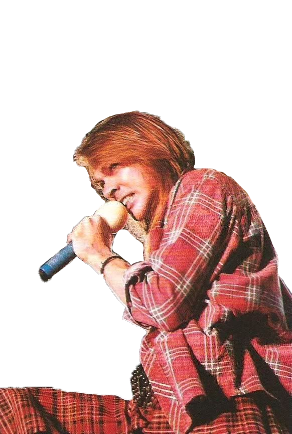
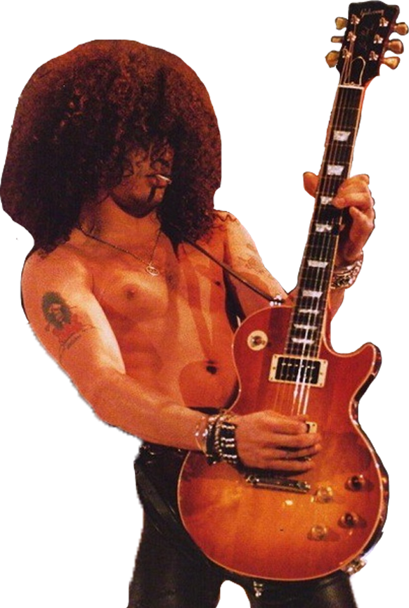
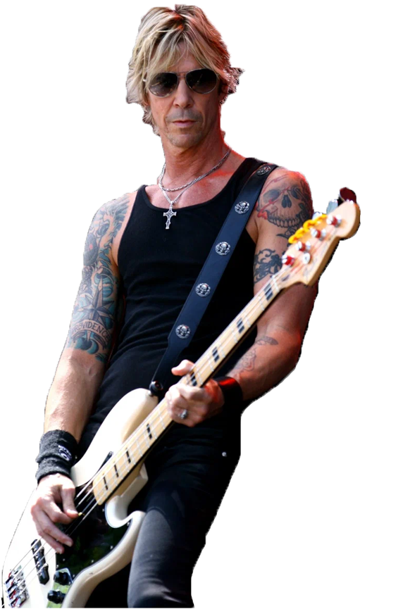
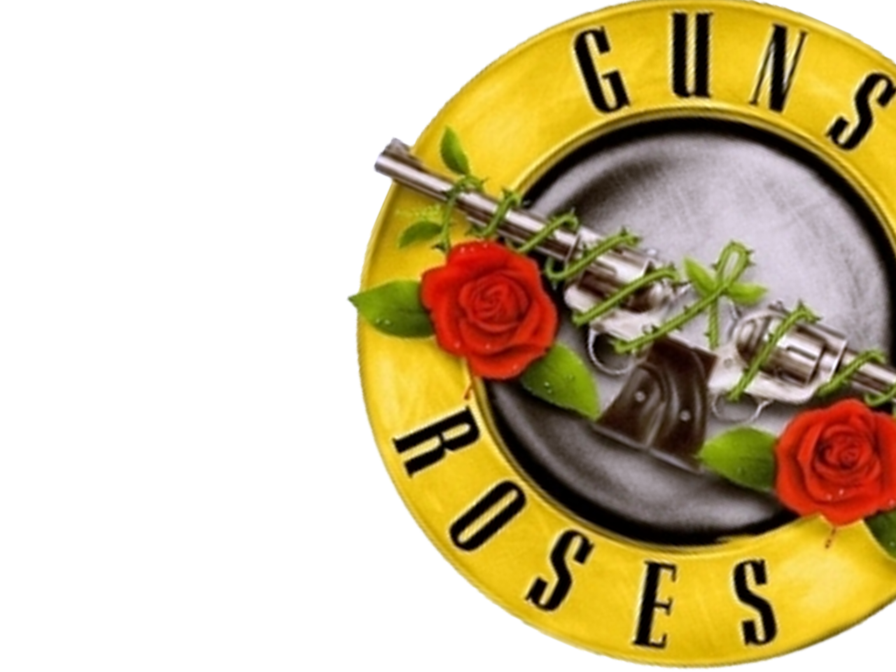
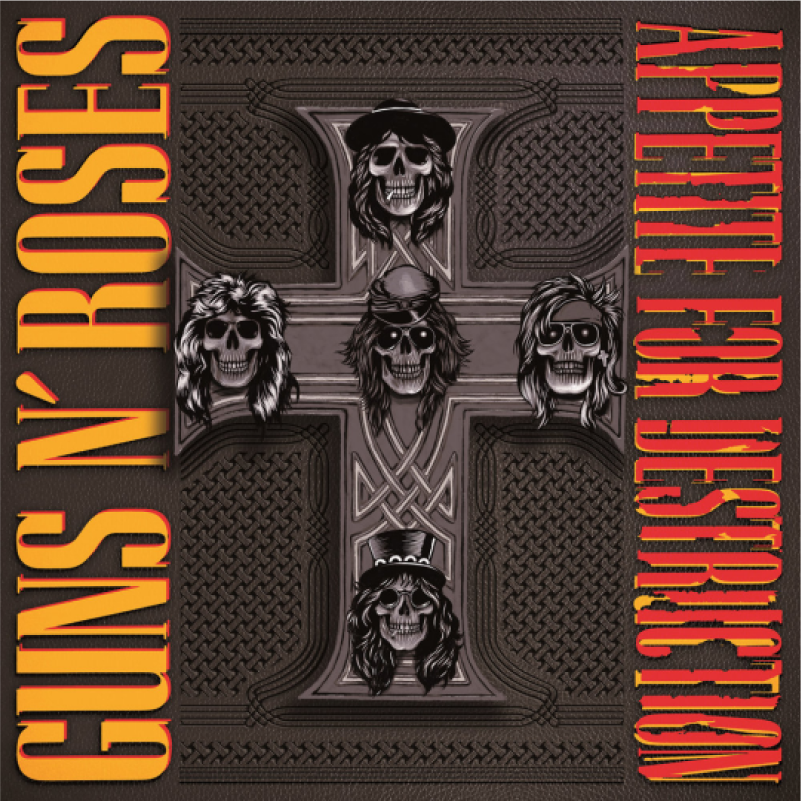
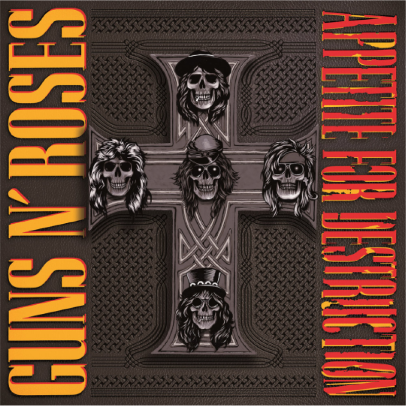

Guns N'Roses" - конечно, больше - Guns, чем Roses: и своей музыкой, и
своей манерой они больше "стреляют", чем "нежно пахнут".
Золотой состав

Axel Rose
“Когда жалуетесь, что новое поколение – говнюки, подумайте, а вдруг среди этих подростков есть новые Guns’N’Roses или новые Motley Crue. Наши родители тоже считали нас говнюками”.

Sol Hadson (Slash)
«Рок-н-ролл — это особый взгляд на жизнь, бунтарство. Он должен быть веселым и стихийным».

Duff McKagan
“Я на Земле, любитель музыки, занимаюсь музыкой и занимаюсь любовью. Мне нравится делать людей счастливыми, и я думаю, что я в основном хороший человек ... несмотря на то, что вы могли бы прочитать обо мне”.
История группы

Guns N’Roses — легендарная рок-группа, на песнях которой выросло не одно поколение. Редкий поклонник музыкального жанра не слышал хит коллектива под названием «Don’t Cry». Популярность композиции не стихает уже десятки лет. Команда, которую собрал Эксл Роуз, отличалась склонностью к скандалам и была олицетворением слогана «Sex, Drugs & Rock n Roll». Несмотря на то, что группа выступает на сцене и сейчас, после внутренних перипетий ей не удалось повторить былой успех.
Эксл Роуз воспитывался матерью и отчимом в строгости. Слушать рок-н-ролл ему запрещали, а по выходным мальчика обязывали посещать церковь. Неудивительно, что, ограниченный во всех подростковых удовольствиях, в 15 лет он решил пойти против системы. К этому возрасту Эксл был главным заводилой для местных хулиганов и частенько попадал в полицейский участок.
С приятелем Иззи Стрэдлином Роуз познакомился в школе. Юноши сошлись в интересах на почве музыкальных предпочтений. Но в отличие от друга Иззи был скромным и спокойным парнем. На досуге они заслушивались песнями «AC/DC», «Aerosmith» и «Led Zeppelin» и постепенно пришли к выводу, что тоже хотят играть рок. Первыми репетиционными точками для начинающих артистов стали гаражи.
В 1985-м состоялось судьбоносное знакомство Эксла Роуза с Трэйси Ганзом. Несложно догадаться, что фамилии музыкантов вошли в название команды. Спустя некоторое время Ганзу пришлось уйти из группы, и ее новым участником стал Сол Слэш Хадсон. Затем команду пополнили басист Дафф Маккаган и барабанщик Стивен Адлер.
Так выглядел первоначальный состав Guns N’Roses. Существует мнение, что название составили из имен команд, где раньше играли участники группы. Одни пришли из «HOLLYWOOD ROSE», а другие – из «L.A. GUNS».
История создания коллектива тем интереснее, что группа набирала популярность не только благодаря таланту. Команду знали как отъявленных скандалистов. Они влачили бедственное финансовое существование. Одной из причин тому было неверное управление коллективом, им занималась менеджер Вики Хэмилтон. В этот период артистам порой даже нечего было есть. Поэтому они не гнушались времяпровождением с сомнительными личностями, воровством и хулиганством.
Судьба улыбнулась будущим звездам в феврале 1986 года. В местном клубе Troubadour состоялся дебютный концерт. Выступление видели представители нескольких студий звукозаписи, и оно привело зрителей в шок. Артисты выглядели маргиналами, но их звучание нравилось всем. Тому Зутауту удалось подписать с ними контракт. Так Guns N’Roses обрели покровителя.

 
